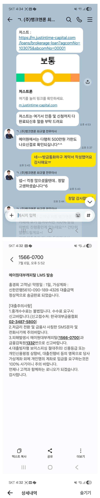
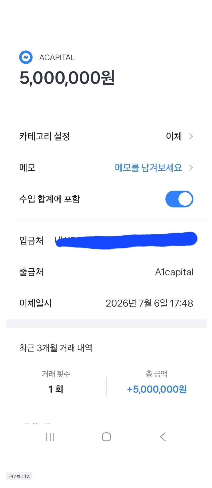

[개인회생자대출] 생각지도 못했던 상황에서 큰도움 되었습니다. 서류준비도 정부어플 두군데와 은행전화 한통으로 다되어서 준비하는데 10분도 안걸렸구요. 전혀 복잡하지 않았어요.
개인회생자 대부업에 기대출건 500있습니다.
현재 직장인이고 실수령액은 170정도, 2년 근속했습니다.
미납,체납 내역은 없었지만 제때에 내지 못한게 있어 과거 연체이력으로 떠서 대출이 나오지 않은상황이었어요ㅠ
정말 급하게 목돈이 필요했는데 회생자인 상황에서 혹시나하고 문의드렸는데 뱅크앤론 최규열대표님이 여기저기 가능한곳 잘 알아봐주셔서 퇴근직전 개인회생자 500 추가대출 받을수 있게되었습니다. 서류준비도 정부어플 두군데와 은행전화 한통으로 다되어서 준비하는데 10분도 안걸렸구요.
전혀 복잡하지 않았어요.
정말 요즘같은 어려운 상황에서 지인에게도 아쉬운소리 못하는 현실에 정말로 감사합니다.
지금 상황을 좀 해결할수있게 되었어요
너무 감사드리고 주변에 적극 추천할게요~~


https://cafe.naver.com/cityman88/311753